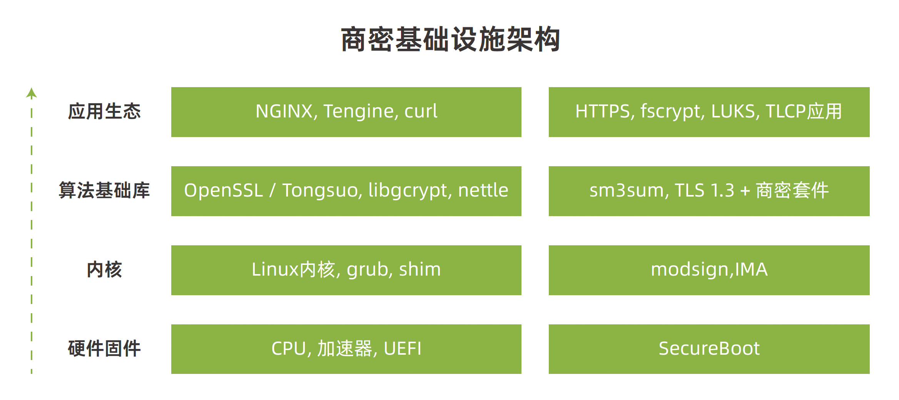

OpenAnolis 全栈国密概述
商密软件栈 SIG
从商密算法标准公布到现在已有十多年时间，与 AES，SHA 等主流国际算法相比，目前商密在基础软件中的支持和优化仍然不完善，甚至有较大的差距，商密算法的软硬件生态也处于碎片化状态，密码算法作为网络和数据安全的基石，应该且有必要在基础软件中具备开箱即用的能力；另一方面，密码算法是保障信息和数据安全的核心技术，随着近年来外部的国际贸易冲突和技术封锁的加深，内部互联网的快速发展，我们不能单一依赖国外的的技术标准和产品，增强我国行业信息系统的安全可信显得尤为必要和迫切。商用密码算法给我们提供了一个新的选择，使得我们可以完全使用商密技术来构建网络和数据安全环境。
🟢 SIG 目标
建立以国密算法为主的操作系统基础软件，与社区深度合作，在固件，bootloader，内核，算法基础库以及语言运行时中支持国密算法，依托 Anolis OS 发行版作为载体，构建起全栈国密生态及解决方案，致力于为行业提供基于国密的信息安全标准。
🟢 SIG 原则
依托基础软件上游社区，为已有的轮子支持商密算法，尽可能不重新造轮子。
🟢 SIG 愿景
让天下没有难用的国密。
全栈商密生态架构
商密软件栈 SIG 依托基础软件上游社区，秉承为已有轮子支持商密的原则，在全栈范围内的多个基础组件中实现了商密算法以及性能优化，包括 Linux 内核，OpenSSL，libgcrypt，gnulib，nettle 等在内的基础组件，支持了商密算法以及大量的性能优化，并且得到上游社区的支持进入主线，基本补齐了商密算法在基础软件中的一些短板，在兼容现有API的情况下，提供给普通开发者平滑的使用体验。
此外，Anolis社区相关团队积极投入，支持在TLS v1.3协议中使用商密算法套件，目前这个技术已经被国际标准承认，并且以RFC8998标准发布，这意味着我们可以选择在TLS v1.3协议中使用完整的商密套件，这极大的扩充了商密的应用范围，为了应用这些技术标准，同时为商密标准量身打造了Tongsuo密码算法库，在兼容OpenSSL的基础上支持了商密的标准，为用户提供一个基于商密的应用开发及运行环境。

商密 SIG 现状
龙蜥社区在众多的常用基础软件中实现了商密的支持，极大的丰富了商密的软件生态，并且把这些技术全部回馈到了上游社区，以下是相关的基础软件对于商密算法的支持情况以及社区回馈统计（截止2022年12月）：
| 开源软件 | SM2 | SM3 | SM4 | PKCS#7 | X509 | commits | 修改行数 |
|---|---|---|---|---|---|---|---|
| gnulib | - | ✅ | - | - | - | 5 | -5/+1046 |
| libgcrypt | ✅ | ✅ | ✅ | - | - | 22 | -155/+4202 |
| linux | ✅ | Y | Y | ✅ | ✅ | 68 | -1536/+15478 |
| RustCrypto | ❌ | ✅ | Y | - | - | 1 | -0/+851 |
| ima-evm-utils | ✅ | ✅ | - | - | - | 5 | -13/+97 |
| ltp | ❌ | ✅ | ✅ | - | - | 2 | -7/+30 |
| libkcapi | - | ✅ | ✅ | - | - | 2 | -3/+287 |
| nettle | ❌ | ✅ | ✅ | - | - | 11 | -11/+1241 |
| OpenSSL | Y | Y | ✅ | Y | Y | 14 | -81/+471 |
当前商密软件栈的纵向指令集优化情况及性能提升统计：
| 优化项目 | libgcrypt | linux | OpenSSL | 性能提升 |
|---|---|---|---|---|
| SM3 | ||||
| 🔸 x86-avx/bmi2 | Y | ✅ | 36 % | |
| 🔸 armv7-neon | ||||
| 🔸 armv8-neon-aarch64 | Y | 34 % | ||
| 🔸 armv8-ce | ✅ | Y | Y | 55 % |
| 🔸 armv9-sve2 | ||||
| SM4 | ||||
| 🔸 x86-aesni-avx | Y | ✅ | WIP | 465 % |
| 🔸 x86-aesni-avx2 | Y | ✅ | 793 % | |
| 🔸 x86-gfni-avx2 | Y | |||
| 🔸 x86-gfni-avx512 | Y | |||
| 🔸 armv7-neon | ||||
| 🔸 armv8-neon-aarch64 | ✅ | ✅ | Y | 260 % |
| 🔸 armv8-ce | ✅ | ✅ | Y | 4050 % |
| 🔸 armv9-sve2-ce | ✅ | - |
- 性能提升数据是相比于纯软件实现的数据
- x86 架构的测试环境是
Intel i5-6200U 2.30 GHz - arm 架构的测试环境是
T-Head Yitian-710 2.75 GHz - ✅ 表示由OpenAnolis开发并已经贡献到开源软件中的特性
- “WIP”表示由OpenAnolis开发中的、或是开源软件正在进行review的特性
- “Y”表示开源软件已经支持且不是由OpenAnolis开发的
- ❌ 表示开源软件尚未支持
- “-”表示开源软件无需支持
应用场景
在以下的场景中，通过在各基础软件中支持的商密实现，可以平滑的从国际主流算法切换到商密算法上来，在提供高安全性的同时，也有效避免了国外技术封锁带来的风险。
- LUKS 磁盘加密支持使用 SM4 商密算法；
- fscrypt 支持使用 SM4 算法，以及 SM4-XTS，SM4-CBC 模式优化加速；
- TLS 1.3 支持使用商密算法套件（TLS_SM4_GCM_SM3）；
- IMA，modsign 支持使用 SM2/SM3 算法组合的签名验签，涉及 Linux 内核，sign-file 工具和 ima-evm-utils 的支持。
加入商密软件栈 SIG
以下是我们在 OpenAnolis 上的全栈国密SIG，非常欢迎有兴趣的开发能参与到社区中来，为中国的基础软件安全添砖加瓦。
🔗 SIG地址：https://openanolis.cn/sig/crypto
欢迎加入钉钉交流群，与社区用户和开发者实时交流：